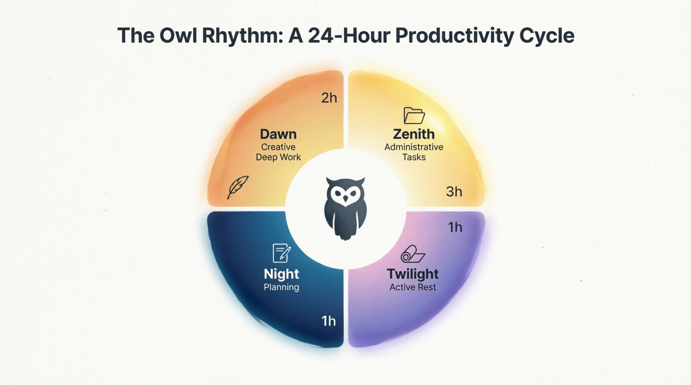

En bref: Vous forcez à 22h. Vous êtes épuisé à 10h. Vous vous dites "je manque de discipline". Et si je vous disais que vous luttez contre des millions d'années d'évolution biologique? Découvrez le Rythme du Hibou.
Sommaire
🎭 Le mythe de la productivité linéaire
Vous forcez à 22h. Vous êtes épuisé à 10h. Vous vous comparez à cet entrepreneur qui se lève à 5h et reste productif jusqu'à 23h. Et si je vous disais que vous luttez contre des millions d'années d'évolution biologique?
Sur les réseaux, on dit: "Lève-toi à 5h. Travaille dur. Sois constant." Comme si la productivité était une ligne droite. Le problème? Votre corps n'est pas conçu pour ça. Dans la nature, les animaux alternent activité intense et repos. Les hiboux chassent par intermittence, pas en continu.
L'idée d'une productivité linéaire constante ne correspond pas à la réalité biologique.
La biologie circadienne: votre corps n'est pas une machine
🕐 Le rythme circadien (24h)
Votre horloge interne synchronisée avec le cycle jour/nuit. Elle influence la mélatonine (sommeil), le cortisol (éveil/stress), la température et la digestion.
⚡ Les cycles ultradiens (70-120 min)
Votre cerveau alterne entre phases de haute concentration (70-120 min) et phases de récupération (15-20 min).
Analogie: Votre corps n'est pas une voiture qu'on peut rouler à 130 km/h pendant 16h. C'est un sprinteur qui alterne course et récupération.
Le recadrage: passer de "constant" à "cyclique"
❌ Avant: "Je dois être constant et productif toute la journée."
✅ Après: "Je dois être cyclique et respecter mes phases naturelles."
Ce n'est pas un manque de discipline. C'est de l'intelligence biologique. Vous n'avez pas besoin de plus de discipline. Vous avez besoin de plus de cycles.
🦉 Le Rythme du Hibou: 4 phases
Phase 1: L'Aube (2h max)
Quand: Les 2 premières heures après votre réveil.
Quoi: Travail créatif profond, tâches à haute valeur ajoutée.
Pourquoi: Votre cortisol est au plus haut, votre esprit est frais.
☀️ Phase 2: Le Zénith (3h max)
Quand: Milieu de matinée à début d'après-midi.
Quoi: Tâches administratives, réunions, appels.
Pourquoi: Votre énergie est stable, vous êtes social.
🌅 Phase 3: Le Crépuscule (1h)
Quand: Fin d'après-midi.
Quoi: Repos actif, marche, mouvement léger.
Pourquoi: Votre énergie baisse, votre corps a besoin de récupération.
🌙 Phase 4: La Nuit (1h max)
Quand: Soirée.
Quoi: Planification, lecture, préparation du lendemain.
Pourquoi: Votre esprit se prépare au repos, la mélatonine monte.
À retenir: Total: 7h de travail structuré, pas 16h de travail forcé.
L'honnêteté: travailler mieux, pas moins
Ce rythme ne va pas vous faire travailler moins en heures. Vous allez toujours travailler 7-8h par jour. Mais vous pourriez travailler mieux, en respectant votre biologie. Ce n'est pas de la paresse. C'est de l'optimisation biologique.
❓ FAQ
Et si je suis du soir, comment j'adapte ce rythme?
Décalez simplement les phases. L'important n'est pas l'heure, mais le respect des cycles: travail profond → tâches administratives → repos → préparation.
Je ne peux pas contrôler mon agenda, comment faire?
Commencez petit. Identifiez vos 2h de pic d'énergie et protégez-les pour le travail profond. Le reste s'adapte progressivement.
Et si j'ai des enfants ou des contraintes familiales?
Adaptez. Le Rythme du Hibou est un cadre, pas une prison. L'essentiel: identifier vos phases d'énergie et les respecter autant que possible.
Adapter ce rythme à mon contexte
Vous avez aimé cet article ? Partagez-le avec quelqu'un qui pourrait en avoir besoin.